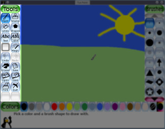
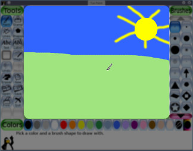
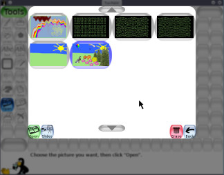

version 0.9.17
专为儿童设计的易用的绘图软件
Copyright 2002-2007 by Bill Kendrick and others
New Breed Software
翻译:易明晶 (Email:hackergene@gmail.com)
bill@newbreedsoftware.com
http://www.tuxpaint.org/
June 14, 2002 - June 27, 2007
Copyright 2002-2007 by Bill Kendrick and others
New Breed Software
翻译:易明晶 (Email:hackergene@gmail.com)
bill@newbreedsoftware.com
http://www.tuxpaint.org/
June 14, 2002 - June 27, 2007
什么是 'Tux Paint?'
Tux Paint 是一个专为3岁以上儿童设计的免费的绘画软件.它拥有一个简单易用的界面,有趣的音效和一个十分有趣的吉祥物,这个吉祥物能在儿童使用Tux Paint时起到引导作用.Tux Paint提供一张空白的画纸以及多种绘画工具以帮助您的孩子发挥其创造力.
许可证:
Tux Paint 是一个开源的免费的基于通用公共许可证(GUN GPL)发布的软件.它是免费的,并且您可以得到它的源码(这就使得您可以加入新的特性,修正bugs并且将其使用带其他基于GPL发布的软件当中.
点击 COPYING.txt 查看GPL许可证.
目标:
- 简单有趣
- Tux Paint 不是一般意义上的绘画工具,而是作为儿童简单的绘画工具. 它的目标是有趣和易用. 音效和卡通任务帮助用户知道发生了什么,以及让他们乐在其中. Tux Paint也提供一些额外的鼠标图案样式.
- 可扩展性
- Tux Paint是可扩展的. 可以加入笔刷和橡皮图章样式,当然,你也可以去掉它们. 例如,一位老师可以加入一系列动物的图章,然后要求他们的学生去绘制一副生态系统的图画. 当儿童选择一个图形时,每一个图形乃至文本都可以在显示时发出有趣的音效.
- 多平台性
- Tux Paint 可运行于多种计算机平台:Windows, Macintosh, Linux等. 在这些平台上,界面没有差异. Tux Paint 在一些老机器系统上(比如 Pentium 133)也可以很稳定的运行.
- Simplicity
- Tux Paint不直接访问计算机的优先级. 当程序退出的时候,当前的图片可以被保留.当程序再次运行时,图片又再次显示.保存图片不需要创建文件名或者使用键盘. 当从一系列缩略图中选择一个图片并打开它时,改文件名就已经创建完成. 在计算机上访问其他文件是受限制的.
加载 Tux Paint
Linux/Unix 用户
在图形界面下,Tux Paint 应该在您的KDE和/或GNOME程序目录上有图标.
您可以在两者中任意一个运行以下shell(脚本)命令: (如, "$"):
$ tuxpaint如果有错误发生,该错误将会在终端显示出来.
Windows 用户
Tux Paint如果您用 'Tux Paint Installer"在您的计算机上安装了Tux Paint, 它将会询问您是否要在'开始' 目录上建立图标,以及是否建立快捷方式. 如果您选择了同意,您可以简单地从 '开始' 目录 (如, Windows XP下的"所有程序"), 或 通过双击上的 "Tux Paint" 图标来运行Tux Paint.
如果您通过下载ZIP压缩包, 或使用 'Tux Paint Installer"安装了Tux Paint,但没有选择建立快捷方式,您可以通过双击Tux Paint文件夹里的 "
tuxpaint.exe" 图标来运行Tux Paint.默认情况下, 'Tux Paint Installer'将 Tux Paint's 文件夹选择安装在 "
C:\Program Files\"目录,.您可以在安装时更改安装路径.如果您使用下载的 'ZIP压缩包', Tux Paint文件夹可以被解压缩到任意路径.
Mac OS X 拥护
双击"Tux Paint" 图标.
标题界面
当 Tux Paint 初次运行, 会出现title/credits 界面.
一旦加载完成, 按任意键或鼠标继续. (或者, 30秒后, 此标题界面自动消失..)
主界面
主界面由以下部分组成:
- 左工具栏:
此工具栏包含绘画和编辑控制.

- 中间: 画布
在屏幕中间并占据屏幕最大部分的是画布. 当然这就是您要作画的地方咯! :)

- 右边: 选择器
取决于您现在的工具, 选择器显示的是不同的. 如, 当选择笔刷时, 它会显示不同的可用的笔刷工具. 当选择橡皮图章时,它会显示有能使用的不同的图形.
- 下方: 颜色
不同颜色的按钮组成一个可用的调色板.
(注意: 您可以为您的Tux Paint自定义颜色. 查看 "Options" 文档.)
- 按扭: 帮助区
当您作图时,在屏幕的按钮上,Linux的吉祥物小企鹅Tux将提供一些提示和其他信息..
可用的工具
绘画工具
- 绘图 (笔刷)

笔刷工具让您使用不同的笔刷(在右边的选择器中选择)和颜色(在调色板中选择)自由的作图..
如果您按住鼠标不放,然后移动鼠标,它将会岁着您的移动而作图.
当您作图时,还伴有音效.
- 图章 (橡皮图章)

图章工具是一副橡皮图章集. 它使您能够在您的图画上粘贴先画好的或者其他图片(比如马,树或者月亮).
当您围绕画布移动鼠标时,将会显示一个概要提示您此图章会放在哪,它应该多大.

Tux Paint提供许多类的图章(如, 动物, 植物, 外太空, 交通工具, 人等.). 使用左右箭头去选择.
一些图章可以更改颜色.如果在画布下的调色板是可用状态, 您可以在您将其放到图上点击调色板中的颜色以更改其颜色.
您可以缩小或扩大图章,而且可以垂直的翻转或以镜像显示.

不同的图章可以有不同的音效或语音描述. 左下方的按钮可以让被选择的图章再次播放音效或者语音描述.
(注意: 如果 "
nostampcontrols" 选项设定, Tux Paint 将不会缩小,扩大,翻转或者镜像图章.查看 "Options" 文档.)
- 线条

此工具将使您能够使用不同的笔刷和颜色画出直线.
点击鼠标选择线条始点. 当您移动鼠标时,一个细的可变的线条会显示线条将会画在哪儿.
完成线条后,将会播放 "sproing!" 这个声音.
- 图形
此工具让您画出简单的充满的或不满的图形.
从右边的选择器中选择图形 (圆, 方, 椭圆, 等.).
在画布上, 点击鼠标不放并移动来画出一个图形. 一些图形可以改变其比例 (例如, 长方形和椭圆形), 其他的则不能 (例如, 正方形和原形) .
- 普通模式
现在你可以移动鼠标以旋转图形.
再次点击鼠标可以使改图形填充上当前使用的颜色.
- 简单图形模式
- 如果简单图形可用(例如, 使用 "
--simpleshapes" 选项), 当您移动鼠标时将画出改图形. (不需要旋转这步.)
- 文本

选择一个字体(从右边的可用字母中)和颜色(从调色板中). 点击屏幕然后将会出现一个指针. 输入文本,它将显示于屏幕上.
按 [Enter] 或 [Return] 然后图画上将会显示文本并且指针将会指向下一行.
您也可以按 [Tab] 然后文本将会显示在在图画上,但是指针将移向文本右方而不是下一行. (这对创建一个混合颜色,字体,样式和大小的文本行是非常有用的.如, 这个.)
当文本输入可行时,点击图片的其他地方将使得现在的文本行移动到您点击的地方 (使得您可以继续编辑).
- 多国文字输入
Tux Paint 支持多国的文字输入. 大多拉丁字母 (A-Z, ñ, è, 等.) 都可以直接输入. 一些语言需要在Tux Paint 改变到一个可变的输入模式才能输入,而且一些字母必须由一些字根组成.
当When Tux Paint设定为某种语言以提供输入模式时,通过普通模式(拉丁文)和特殊模式或其他模式来使用字根'.
当前支持的可输入的模式和固定或循环模式如下: 注意: 一些字体对于所有的语言而言并不是全部包括的,所以有时候您会去更改一些字体去看您正在输入的文字.
- 日语 — Romanized Hiragana and Romanized Katakana — right [Alt]
- 韩语 — Hangul 2-Bul — right [Alt] or left [Alt]
- 魔法 (特效)
魔法工具是一个特殊的工具.从右边的选择器中选择一个魔法特效,然后点击,在图画的周围使用,您就可以看到特效了.
- 填充
- 该工具可以使用某种颜色渲染画面. 它使得你可以快速的填充画面的某部分.
- 小草
- 可以在图上画上小草图案. 可以作出十分真实的草地,并且可以控制距离以及透视.小草的绿色可以在调色板中选择不同的色调.
- 砖块
- 可以绘制出十分真实,或大或小的砖块,并且可以在调色板中选择颜色.
- 彩虹
- 可以选择彩虹中不同颜色的笔刷.
- 闪烁
- 可以在画布上出现不同颜色的闪烁火花.
- 污点
- 可以使得您鼠标点击的地方画面模糊
- 染污
- 涂上某些颜色使得看起来象用湿笔弄脏一般.
- 变亮
- 使画面某些地方变亮.
- 变暗
- 使画面某些地方变暗.
- 粉笔
- 使画面某些地方看起来象粉笔画上去一般.
- 马赛克
- 使您鼠标移动到的画面打上马赛克.
- 反向
- 使画面颜色相反.(如,黑变白)
- 色彩
- 可以改变某些地方的色彩.
- 水滴
- 在您鼠标移动的地方留下水滴.
- 卡通
- 使画面看起来像卡通.(使用较厚的框架和较硬的的颜色).
- 镜像
- 水平翻转画面.
- 翻转
- 和镜像相似,是垂直翻转画面.
- 橡皮擦

和笔刷类似的工具. 当您点击或拖拽鼠标,画面将被擦为白色或者和背景一样的颜色.
可选择许多橡皮擦的尺寸.
其他控制
- 取消

点击该工具可以取消当前操作.而且可以取消多步.
注意: 您也可以使用快捷键 [Control]-[Z] 来取消.
- 重做

点击该工具可以重做您未完成的图片.
只要您没有完成,您可以重做多次.
注意: 您也可以使用快捷键 [Control]-[R] 来重做.
- 新建

点击 "New" 按钮将新建一个画面 .
注意: 您也可以使用快捷键 [Control]-[N] 来新建.
- 打开

这将显示您所保存的所有图片的清单. 如果您有更多的图片在屏幕上,可以使用 "Up" 或 "Down" 箭头来滚动清单.

选择一张图片,然后...
'起始' 图片

点击左下方绿色的 "Open" 按钮来加载选中的图片.
(当然,您也可以双击来加载它.)

点击右下方的 "Erase" 按钮橡去理选中的图片 . (您将被询问是否确定.)

点击左下方蓝色的 "Slides" (slide projector) 按钮来使用幻灯片模. 点击 "Slides",查看更多.

点击右下方 "Back" 箭头按钮来取消并回到您上次处理的图片.
连同您创建的图片, Tux Paint 提供 '起始' 图片. 打开它们就像创建新图片一样, 除非是空白页. '起始页' 就像一个上色的图(一个黑白框架的图片,您可以在上面加入您的颜色) ,或者像一张 3D 图, 您在其间比特.
'起始' 图片在 'Open' 屏幕上有一个绿背景. (普通图片为蓝色背景.) 当您加载一个 '起始页,' 然后在上面绘图,并且点击 'Save,' 她将创建一个新的图片 (她不会覆盖原先的 '起始页').
如果选择打开图片并且现在的图片还未保存,您将被提示是否要保存它. (查看 "Save" )
注意: 您也可以使用快捷键 [Control]-[O] 去使用 'Open' 会话.
- 保存

保存您当前的图片.
如果您之前并未保存,它将在保存清单里创建一个新的条目.
注意: 它不会提示您任何事情(如, 文件名). 它将简便的保存图片,并且播放一个"相机快门" 的音效.
如果您在之前 保存过该图片, 或者这张图片是您通过 "Open" 命令打开的, 您将被询问是否覆盖原来的版本,或者创建一个新的图片文件..
(注意: 如果选定 "
saveover" 或 "saveovernew" 选项, 它在您保存前就不再询问. 查看 "Options" 文档.)注意: 您也可以通过快捷键 [Control]-[S] 来保存.
- 打印

点击此按钮将打印您的图片.
在大多数平台上,只要您不是以全屏模式运行Tux Paint.您可以按住键盘上的 [Alt] 键同时点击 'Print' 按钮来进入打印会话.
- 禁用打印
如果设定 "noprint" 选项 (在Tux Paint 配置文件中设定 "
noprint=yes" , 或在命令行下使用 "--noprint" 命令), "Print" 按钮将被禁用.查看 "Options" 文档.)
- 限制打印
如果设定 "printdelay" 选项 (在配置文件中设定 "
printdelay=SECONDS" , 或在命令行下使用 "--printdelay=SECONDS" 命令), 您就只能在设定的 SECONDS 内使用打印功能.例如, 设定 "
printdelay=60", 您只能在一分钟内使用打印功能.查看 "Options" 文档.)
- 打印命令
(仅限 Linux 和 Unix )
Tux Paint 只能靠一种脚本来打印,这个脚本代表着绘画已经将其发送到一个扩展的程序中.默认情况下,这个程序就是:
lpr该命令可以通过设定 Tux Paint 配置文件中的的"printcommand" 值 来改变.
只要您不是在非全屏模式下,如果在按住 [Alt] 键的同时,点击 'Print' 按钮, 一个可改变的程序就可以运行. 默认情况下, 该程序是 KDE's 打印图形化会话.
kprinter该命令可以通过设定Tux Paint配置文件中的 "altprintcommand" 值来改变.
如果使用打印命令,参阅 "Options" 文档.
- 打印设定
(仅限 Windows )
默认情况下,当按下打印键时, Tux Paint 按照默认设定简单的打印.
但是,只要您不是全屏模式,如果按住 [Alt] 键不放同时点击打印按钮,一个Windows的打印会话会出现,在这个打印会话中,你可以对其做相应的设定修改.
您可以通过使用 "printcfg" 选项或者命令行下的 "
--printcfg"命令 , 或者设置Tux Paint自身的配置文件 ("tuxpaint.cfg") 为"printcfg=yes" 来储存这些修改.如果使用了 "printcfg" 选项, 将从您的个人文件夹中的"
print.cfg"文件加载打印机设定.任何改变将在那里保存起来.查看 "Options" 文档.)
- 打印会话选项
默认情况下,如果按住 [Alt] 键不放,并点击 'Print' 按忸,Tux Paint 只显示打印机会话 (或者,在Linux/Unix平台下,运行"altprintcommand",如.用"kprinter"代替"lpr").
但是,也可以改变这种方式. 您可以在命令行下使用 "
--altprintalways" 命令, 或在Tux Paint的配置文件中设定 "altprint=always" 来使得打印机会话长期显示. 或者您也可以通过使用 "--altprintnever", or "altprint=never"命令来防止 [Alt] 键的作用.查看 "Options" 文档.)
- 幻灯片
"Slides" 按钮在 "Open" 会话中是可用的. 它和t displays a list of your saved files, similar to the "Open" 会话相似,展示一个您所保存的图片的清单, 但是没有"起始"图片.
在幻灯片展示模式下您可以一个接一个地点击每张图片. 一个阿拉伯数字将在每张图片上显示出来,以告诉您它们在被展示的顺序.
您可以点击选中的图片以放弃选择.
幻灯滑动数值范围可以通过左下方的屏幕(在 "Play" 按钮旁)来改变以适应幻灯展示的速度. 选择最左边的设定来禁用自动播放,您需要按一个键或者跳到下一个幻灯片.
当您准备好后,点击"Play" 按钮来启动幻灯播放. (注意: 如果您未选择某些图片,那么默认将播放所有图片.)
在幻灯播放时,按 [Space] , [Enter] 或 [Return] 或 [Right Arrow], 或点左下方的 "Next" 按钮播放下个幻灯片. 按 [Left] 回到上一张幻灯.
按 [Escape], 或点右下方的 "Back" 按钮退出幻灯播放模式,回到图片选择界面.
Click "Back" in the slideshow image selection screen to return to the "Open" dialog.
- 退出

点击 "Quit" 按钮, 关闭 Tux Paint 窗口, 或点击 [Escape] 键退出.
Tux Paint将提示您是否确定退出.
如果您选择退出,但您没有保存当前图片,Tux Paint 将询问您是否保存当前图片.如果它不是新建图片,Tux Paint 会询问您是否覆盖原来的图片或者创建一个新的图片. (查看 "Save" .)
注意: 如果图片已经保存,在您下次启动Tux Paint时,该图片将自动加载.
注意: 可以禁用"Quit" 按钮 和 [Escape] 键 (如, 在Tux Paint Config中选择 "Disable 'Quit' Button",或在命令行下运行 "
--noquit" 命令).这此情况下,可以使用 "window close" 键(非全平模式)和 [Alt] + [F4] 来退出.
如果以上不能退出,那么[Shift] + [Control] + [Escape] 可以退出. (查看 "Options" 文档.)
- 禁音
当程序运行时可以使用 [Alt] + [S] 禁止和激活音效.
需要注意的是,如果完全禁音 (如, 在Tux Paint Config里没有选择 "Enable Sound Effects" 或者在命令行下运行 "
--nosound" 命令), [Alt] + [S] 键将没有任何作用.
由于 Tux Paint的 'Open' 会话只显示您用Tux Paint创建的图片, 那么您想要加载其他图片该如何操作呢?
很简单,您只需要将该图片转换为PNG格式并放到 Tux Paint 的 "saved" 文件夹中:
- Windows
- 在用户的 "
Application Data" 文件夹中, 如:"C:\Documents and Settings\(user name)\Application Data\TuxPaint\saved\"- Mac OS X
- 在用户的 "
Library" 文件夹中,如:"/Users/(user name)/Library/Application Support/Tux Paint/saved/"- Linux/Unix
- 在隐藏的 "
.tuxpaint" 目录中, 在用户的home目录: "$(HOME)/.tuxpaint/saved/"使用 '
tuxpaint-import'Linux 和 Unix 用户可以使用当您安装Tux Paint时安装的 "
tuxpaint-import" 脚本. 它需要一些 NetPBM 工具来转换图片格式 (如,"anytopnm"), 重新定位图片大小以适应画布 (如,"pnmscale"), 以及转换PNG格式 (如,"pnmtopng").同时也使用 "
date" 命令 来获得当前Tux Paint保存转换格式后图片的时间和日期. (请记住, 当您去保存或打开一个图片时,Tux Paint不会询问您文件名!)使用 '
tuxpaint-import'命令使您简便的在命令行下选择您希望转换的文件名.这些图片将被转换并且放在您的 Tux Paint 'saved' 路径中. (注意: 如果您是为了其他用户,您需要确保已经在他们的用户ID号登陆并运行该命令.)
例如:
$ tuxpaint-import grandma.jpg
grandma.jpg -> /home/username/.tuxpaint/saved/20020921123456.png
jpegtopnm: WRITING A PPM FILE第一行 ("
tuxpaint-import grandma.jpg") 是运行命令. 后面两行是程序执行该命令输出.现在您可以启动Tux Paint, 原来的图片将会在 'Open' 会话中显示. 您只需要双击图标!
手动操作
Windows, Mac OS X 和 BeOS 用户目前必须用手动来转换.
运行图形程序使您加载图片和保存为PNG格式成为可能. (参见 "PNG.txt" 文档.)
缩小到,宽不大于448相素,高不大于376相素的尺寸. (如., 最大为 448 x 376 pixels)
保存图片为PNG格式. 强烈建议您使用日期来命名文件. 因为Tux Paint 转换时使用:
YYYYMMDDhhmmss.png
- YYYY = 年
- MM = 月 (01-12)
- DD = 日 (01-31)
- HH = 小时, 24小时制 (00-23)
- mm = 分 (00-59)
- ss = 秒 (00-59)
例如:
20020921130500- for 9月21日, 2002年, 下午1:05:00将该PNG格式文件放到您Tux Paint的 '
saved' 文件夹中.
Other documentation included with Tux Paint (in the "docs" folder/directory) include:
- AUTHORS.txt
Tux Paint 作者和贡献者名单- CHANGES.txt
发布版本间的更新概要- COPYING.txt
版权许可证 ( GNU通用公共许可证 )- INSTALL.txt
关于编译/安装的介绍.- EXTENDING.html
关于创建笔刷,图章和起始页以及附加的字体来扩展 Tux Paint 的详细介绍.- OPTIONS.html
为了那些不想使用 Tux Paint Config 的人,这是关于在命令行和配置文件选项的详细介绍.- PNG.txt
使用 Tux Paint 时创建PNG格式位图.- SVG.txt
在使用 Tux Paint 时创建SVG格式矢量图片
如果您需要帮助,请联系Tux Paint开发团队 New Breed Software:
http://www.newbreedsoftware.com/您也可以加入 Tux Paint 的mailing lists:
http://www.tuxpaint.org/lists/此外我们推荐您登陆Tux Paint中文官方以获得最直接的中文信息
![[Title Screenshot]](../../html/images/tuxpaint-title.jpg)
![[Selectors - Brushes, Letters, Shapes, Stamps]](../../html/images/selector.jpg)
![[Colors - Black, White, Red, Pink, Orange, Yellow, Green, Cyan,
Blue, Purple, Brown, Grey]](../../html/images/colors.jpg)